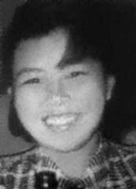

Suely
Yumiko
Kanayama
CIRCUNSTÂNCIAS DA MORTE
A última informação que consta sobre Suely no Relatório Arroyo é que, junto com José Maurílio Patrício, havia saído antes do dia 25 de dezembro de 1973 para buscar Cilon Cunha Brum e José Lima Piauhy Dourado. Deveriam retornar no dia 28 ao local onde ocorreu a investida contra a Comissão Militar, mas nunca mais foram vistos. O relatório do CIE, elaborado em 1975, informa que Suely foi morta em setembro de 1974. iv O relatório do Ministério da Marinha, de 1993v , indica a mesma data de falecimento. Reportagem divulgada no ano de 1979 pelo Diário Nippak, relacionada no Dossiê Ditadura, relata que Suely foi metralhada por militares e enterrada em Xambioá. Algum tempo depois, seu corpo teria sido exumado por desconhecidos. Entretanto, o camponês Josias Gonçalves de Souza, conhecido como Jonas, em depoimento publicado pelo jornal No Mínimo, no dia 20 de janeiro de 2005, afirma que conviveu por um tempo com Suely na Base Militar de Xambioá, contrariando a hipótese de sua morte por um cerco militar antes de ser levada ao local. Em depoimento prestado à Comissão Nacional da Verdade (CNV), em 19 de novembro de 2013, o sargento do Exército João Santa Cruz Sacramento relatou que viu, mas não participou, da captura da “Japonesa” (perguntado se era Suely Yumiko Kanayama – confirmou que sim) e de outra mulher, as quais “foram capturadas nas margens do rio Araguaia, e foram lá para São Geraldo, lá para Bacaba. Essas eu vou falar a verdade, entendeu? Essas duas elas entraram em interrogatório lá, e quando foi de madrugada eles deram uma injeção letal nelas e mataram as duas. Enterraram do outro lado, porque lá tinha uma pista de avião na Bacaba, uma pista antiga.vi Não soube identificar quem teria aplicado as injeções letais, pois vários militares utilizavam codinome com o prefixo “Dr.”. Quanto ao local para onde Suely foi levada e às circunstâncias de seu desaparecimento, no livro Mata!, Leonencio Nossa narra o encontro do mateiro José Veloso com militares de codinomes Ringo e Toyota, que conduziam Chica à Base Militar da Bacaba, onde ela teria sido torturada e interrogada por Sebastião Rodrigues de Moura, o Curió. Sobre as circunstâncias de seu sepultamento, em entrevista concedida à revista Veja, em outubro de 1993, o coronel da Aeronáutica Pedro Cabral afirmou que Suely foi morta no final de 1974 e que seu corpo foi enterrado na Base Militar da Bacaba. Informou ainda que, durante a Operação Limpeza, seus restos mortais foram desenterrados, colocados em saco plástico e transportados para a Serra das Andorinhas. Neste local, “fizeram uma pilha de cadáveres […] também desenterrados de suas covas originais. Cobertos com pneus velhos e gasolina, foram incendiados”. Confirmando essa versão para a inumação, o “Relatório Parcial da Investigação sobre a Guerrilha do Araguaia – Ministério Público Federal”, de janeiro de 2002, com base no depoimento de Pedro Matos do Nascimento (Pedro Mariveti), informa que Suely foi enterrada na cabeceira da pista de pouso da Base Militar de Bacaba.
The last information that appears about Suely in the Arroyo Report is that, together with José Maurílio Patrício, she had left before December 25, 1973 to look for Cilon Cunha Brum and José Lima Piauhy Dourado. They were supposed to return on the 28th to the place where the attack against the Military Commission took place, but they were never seen again. The CIE report, prepared in 1975, states that Suely was killed in September 1974. iv The Ministry of the Navy report, from 1993v, indicates the same date of death. Report published in 1979 by Diário Nippak, listed in the Ditadura Dossier, reports that Suely was machine-gunned by soldiers and buried in Xambioá. Some time later, his body was exhumed by unknown people. However, peasant Josias Gonçalves de Souza, known as Jonas, in a statement published by the newspaper No Mínimo, on January 20, 2005, states that he lived with Suely for a while at the Xambioá Military Base, contradicting the hypothesis of her death in a military siege before being taken to the location. In a statement given to the National Truth Commission (CNV), on November 19, 2013, Army sergeant João Santa Cruz Sacramento reported that he saw, but did not participate, in the capture of the “Japanese woman” (asked if she was Suely Yumiko Kanayama – he confirmed that she was) and another woman, who “were captured on the banks of the Araguaia River, and went there to São Geraldo, there to Bacaba. These two I will tell the truth, understand? These two were interrogated there, and when it was early in the morning they gave them a lethal injection and killed them both. They buried them on the other side, because there was a plane runway in Bacaba, an old runway. Toyota, who took Chica to the Bacaba Military Base, where she was allegedly tortured and interrogated by Sebastião Rodrigues de Moura, Curió. Regarding the circumstances of her burial, in an interview with Veja magazine in October 1993, Air Force Colonel Pedro Cabral stated that Suely was killed at the end of 1974 and that her body was buried at the Bacaba Military Base. His remains were unearthed, placed in a plastic bag and transported to Serra das Andorinhas. At this location, “they made a pile of corpses […] also unearthed from their original graves. Covered with old tires and gasoline, they were set on fire.” Confirming this version of the inhumation, the “Partial Report of the Investigation into the Araguaia Guerrilla – Federal Public Ministry”, from January 2002, based on the testimony of Pedro Matos do Nascimento (Pedro Mariveti), informs that Suely was buried at the head of the airstrip at the Bacaba Military Base.
La última información que aparece sobre Suely en el Informe Arroyo es que, junto con José Maurílio Patrício, había salido antes del 25 de diciembre de 1973 a buscar a Cilon Cunha Brum y José Lima Piauhy Dourado. Debían regresar el día 28 al lugar donde se produjo el ataque contra la Comisión Militar, pero nunca más fueron vistos. El informe del CIE, elaborado en 1975, señala que Suely fue asesinado en septiembre de 1974. iv El informe del Ministerio de Marina, de 1993v, indica la misma fecha de muerte. Informe publicado en 1979 por el Diário Nippak, incluido en el Dossier Ditadura, relata que Suely fue ametrallada por soldados y enterrada en Xambioá. Tiempo después, su cuerpo fue exhumado por desconocidos. Sin embargo, el campesino Josias Gonçalves de Souza, conocido como Jonas, en declaración publicada por el diario No Mínimo, el 20 de enero de 2005, afirma que vivió con Suely por un tiempo en la Base Militar de Xambioá, contradiciendo la hipótesis de su muerte en un asedio militar antes de ser trasladada al lugar. En declaración dada a la Comisión Nacional de la Verdad (CNV), el 19 de noviembre de 2013, el sargento del Ejército João Santa Cruz Sacramento informó que vio, pero no participó, en la captura de la “mujer japonesa” (le preguntaron si era Suely Yumiko Kanayama – confirmó que lo era) y de otra mujer, que “fueron capturadas en las orillas del río Araguaia, y fueron para allá a São Geraldo, allí a Bacaba. Estas dos les diré la verdad, ¿Entiendes? Estos dos fueron interrogados allí, y cuando ya era de madrugada les dieron una inyección letal y los mataron a ambos. Los enterraron del otro lado, porque había una pista de aterrizaje en Bacaba, una antigua pista de Toyota, quienes llevaron a Chica a la Base Militar de Bacaba, donde supuestamente fue torturada e interrogada por Sebastião Rodrigues de Moura, Coronel de la Fuerza Aérea, sobre las circunstancias de su entierro. Pedro Cabral afirmó que Suely fue asesinada a fines de 1974 y que su cuerpo fue enterrado en la Base Militar de Bacaba. Sus restos fueron desenterrados, colocados en una bolsa de plástico y transportados a la Serra das Andorinhas. En ese lugar “hicieron un amontonamiento de cadáveres […] también desenterrados de sus tumbas originales. Cubiertos con neumáticos viejos y gasolina, les prendieron fuego”. Confirmando esta versión de la inhumación, el “Informe Parcial de la Investigación sobre la Guerrilla de Araguaia – Ministerio Público Federal”, de enero de 2002, con base en el testimonio de Pedro Matos do Nascimento (Pedro Mariveti), informa que Suely fue enterrada en la cabecera de la pista de aterrizaje de la Base Militar de Bacaba.